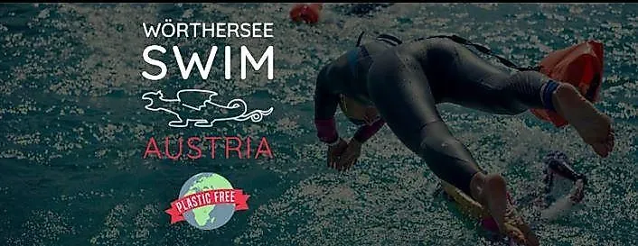

da ven 4 set a sab 5 set · dalle 07:00
Traversata a nuoto del Wörthersee
Titolo originale: WÖRTHERSEE SWIM Austria
Evento internazionale di nuoto in acque libere con distanze brevi, traversata da 17 km e prova estrema da 34 km.
 Indicazioni
Indicazioni
- Costi e prenotazioni
- Quota secondo distanza e categoria · Iscrizione obbligatoria; posti limitati
- Programma
- Programma confermato. Programma, distanze, orari principali e sedi pubblicati dal portale ufficiale del Wörthersee.
- In caso di maltempo
- In caso di maltempo le gare in acque libere sono rinviate a domenica 6 settembre.
- Note
- Evento per nuotatori preparati; alcune prove sono aperte agli amatori.
L’EVENTO
Descrizione completa
Il Wörthersee Swim porta atleti internazionali sul lago con prove per specialisti e distanze più accessibili. Il programma comprende la gara estrema da 34 chilometri, la traversata di 17 chilometri da Velden a Klagenfurt e prove corte nella zona di Maiernigg.
Venerdì 4 la prova da 34 chilometri parte alle 07:00; dalle 15:00 sono previste registrazioni, briefing e gare sprint. Sabato 5 il trasferimento e la partenza della 17 chilometri iniziano dalle 07:15, mentre dalle 10:00 si svolgono le distanze brevi e ricreative a Maiernigg.
La traversata da 17 chilometri segue un tracciato vicino alla riva, assistito da barche di supporto e tre punti di ristoro galleggianti. I posti sono limitati e il ritiro del pacco gara termina un’ora prima della partenza.
IL PROGRAMMA
Programma e orari
Appuntamenti raccolti dalle fonti elencate. Dove manca un orario, non è ancora disponibile in questa scheda.
Venerdì 4 settembre
- 07:00 · partenza prova da 34 km
- 15:00 · registrazioni, briefing e gare sprint
- 18:00 circa · termine attività
Sabato 5 settembre
- 07:15 · trasferimento e partenza della 17 km da Velden
- 10:00 · distanze brevi e fun a Maiernigg
- 18:00 circa · premiazioni e chiusura
INFORMAZIONI UTILI
Prima di partire
- Evento per nuotatori preparati; alcune prove sono aperte agli amatori.
- Testi tradotti in italiano dalla fonte tedesca.
- Contatti: Informazioni e iscrizioni su woerthersee-swim.com
ORGANIZZAZIONE